主版。四角 L 角标 + 中心烧橙十字,墨黑线条 3px,透明背景。

暗色模式:线条换成纸色 #f4efe6,橙心不变。配合站点深碳底 #14110d。
单色墨黑版,用于黑白印刷 / 单色场景。需要纸色单色版把 #1a1714 换成 #f4efe6 即可。
符号 + "Fei Liu" 字标。注意:SVG 内文字用的是 'Smiley Sans', system-ui,独立打开会回退到系统字体;生产环境建议用「SVG 符号 + HTML 文字(Smiley Sans via next/font)」分开渲染,字才准。
角标加粗到 10px、中心改成实心橙方块,16px 下仍清晰。用作 favicon / app icon。
public/logos/:fei-liu-mark-frame.svg(主)、-dark、-mono、fei-liu-favicon.svg、fei-liu-lockup-horizontal.svg。